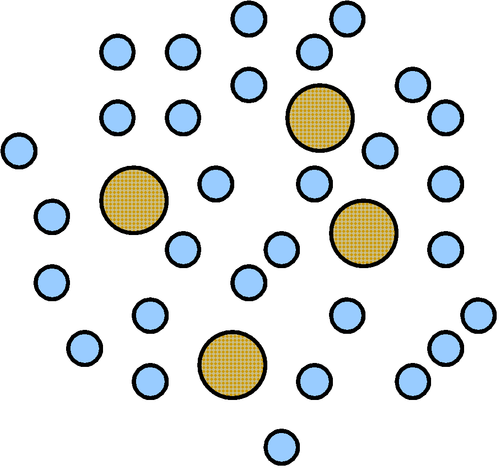
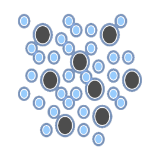
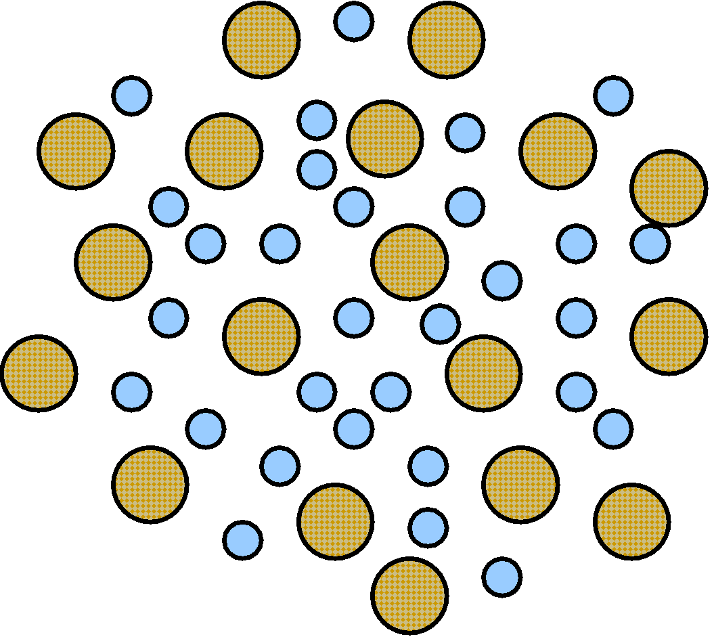
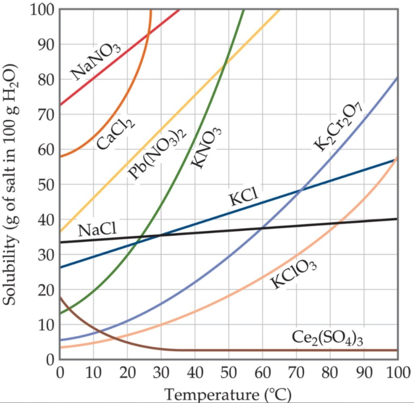

Concentration is the amount of solute dissolved in a solvent at a given temperature.
Dilute means that the mixture has a low concentration of solute dissolved.
Concentrated solutions have a lesser quantity of solvents.
Unsaturated - has a less than the maximum concentration of solute dissolved
Image below:

Saturated - has the maximum concentration of solute dissolved (can see solid in the bottom of solution)
Image below:

Supersaturated - contains more dissolved solute than normally possible (usually requires an increase in temperature followed by cooling)
Image below:

Miscible liquids can easily dissolve in one another.
Immiscible liquids are not soluble in one another.
E.G. Oil floats on the surface of the water because water is heavier and oil is lighter. It is immiscible.
Polar and nonpolar solutes cannot mix. Only polar and polar or nonpolar and nonpolar can mix.
Generally, the solubility of solid solutes in liquid solvents increases with increasing temperature.

Generally, the solubility of solid solutes in liquid solvents increases with increasing temperature.
A point on the line is a saturated solution. Above the line is supersaturated. Below the line is unsaturated.
Previous Page